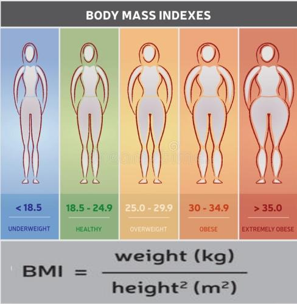

Índice de Massa Corporal |
| Fluxograma | Algorithmi |
|---|---|
begin MainProgram
read real peso "Peso (kg) \t: "
read real alt "Altura (m) \t: "
define real imc = peso / (alt ^ 2)
write "IMC \t\t= " + imc
write "\nClassificação \t= "
if imc < 18.5 then
write "Magro"
else
if imc < 25 then
write "Normal"
else
if imc < 30 then
write "Gordo"
else
if imc < 35 then
write "Obeso"
else
write "Extremamente obeso"
end if
end if
end if
end if
end MainProgram
|
| Input | Output |
|---|---|